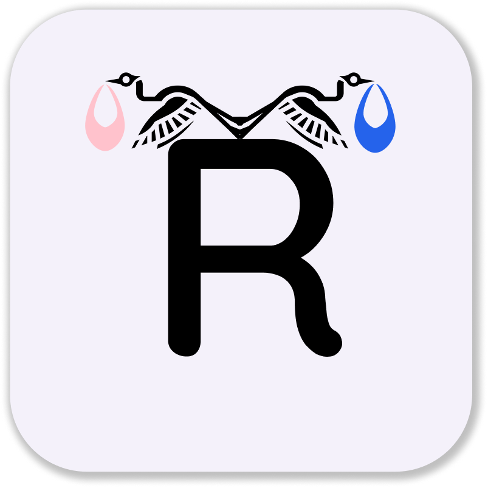
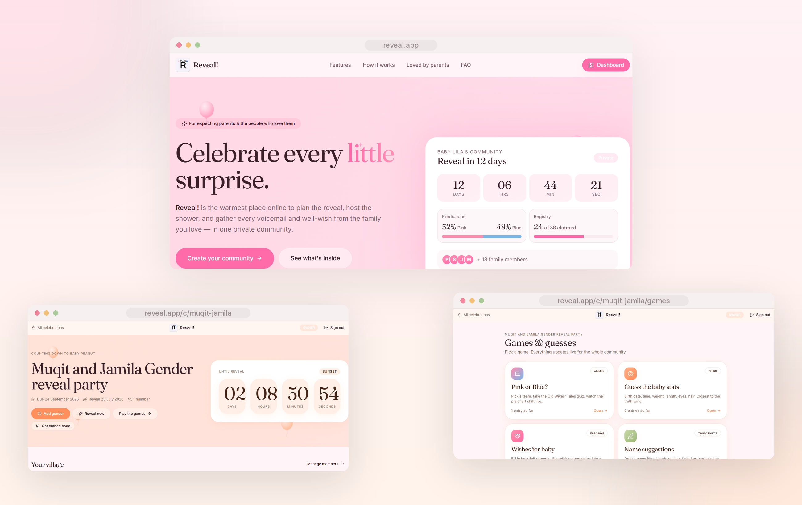
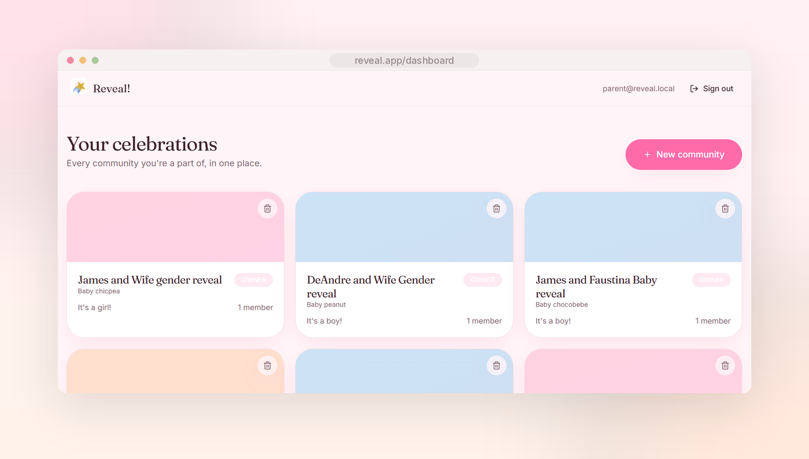
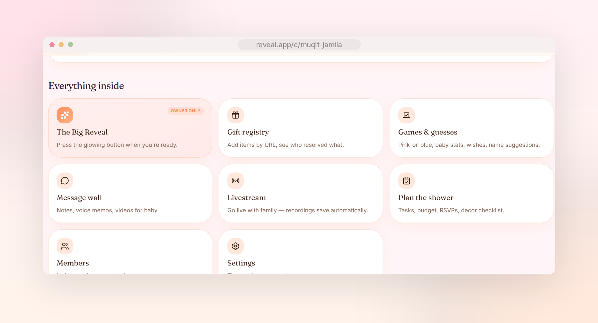
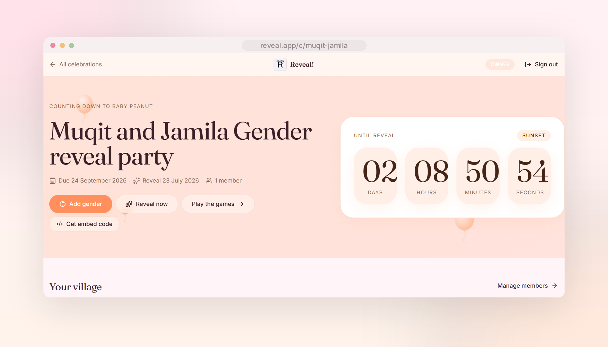
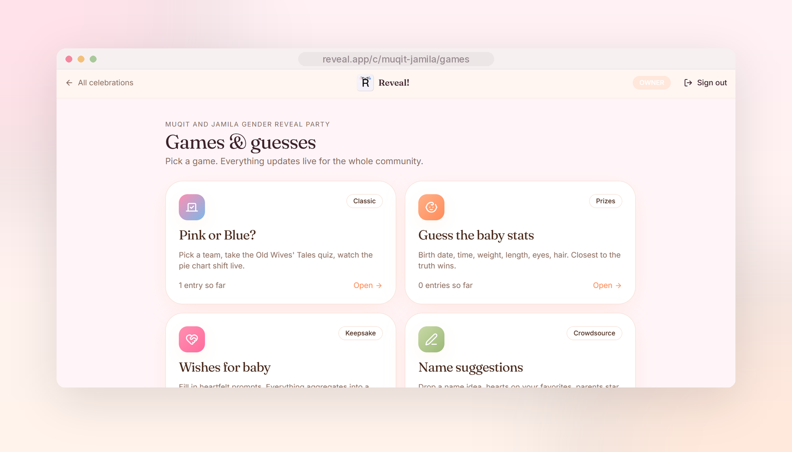
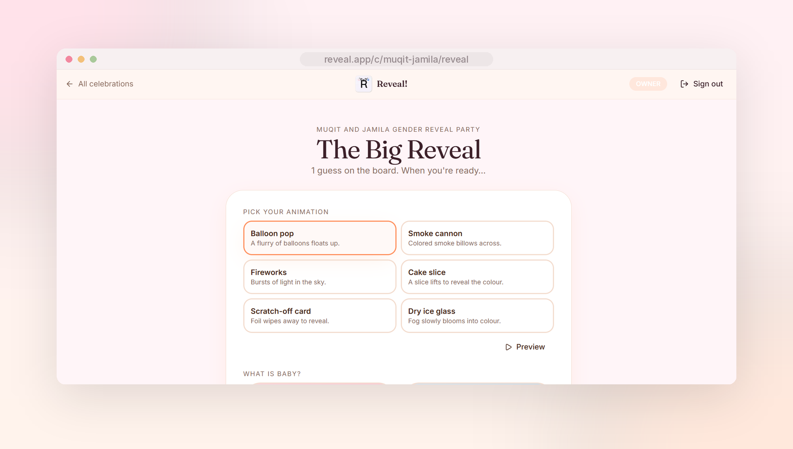
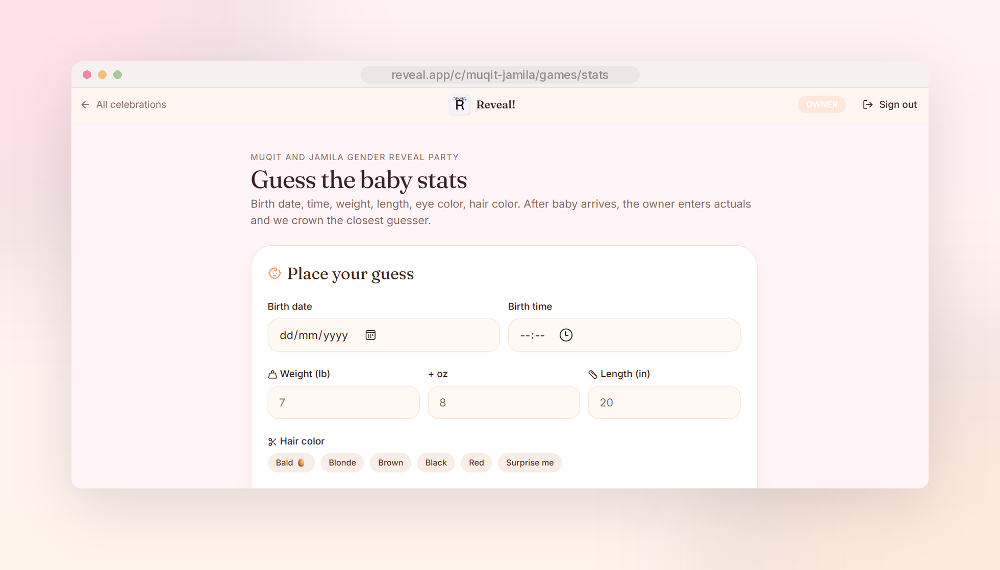

Case Study · Product Design & Development

Reveal!A community-based platform for celebrating gender reveals and baby showers together — wherever everyone is.
Turning two of the most joyful moments in early parenthood into one shared digital celebration everyone can be part of.
Reveal! turns two of the most joyful moments in early parenthood — the gender reveal and the baby shower — into a shared digital celebration that everyone can be part of, wherever they are. Instead of a single-purpose novelty app, it's built around private community spaces: a parent creates a space for their celebration, invites family and friends, and everything happens inside it — a countdown to the big day, a gift registry, guessing games, a livestreamed reveal moment, shower planning, and a place to keep the memories.
I designed the product's UX and UI end to end — the community architecture, the user flows, every core feature's interface, and the "Celestial Joy" design system that gives the whole thing its warm, celebratory feel across both web and mobile.

The Challenge
Reveal! is emotionally simple but structurally complex. It has to feel like pure joy while quietly coordinating real-time, multi-person, cross-device experiences.
My Role
Users & Roles
Everything in Reveal! lives inside a Community — a private celebration space — with three roles designed around how people actually participate.
A single person can belong to multiple communities — a parent in their own space, a guest in three friends' spaces — so the design had to make switching between spaces and understanding "where am I and what's my role here" effortless.

Process & Approach
"This single decision — Community as the home base — is what keeps a feature-rich product feeling like one calm place instead of a cluttered toolbox."
The Design System
Because Reveal! spans web and mobile and lets users theme their own spaces, consistency had to be systematic. I created Celestial Joy — a warm, celebratory design language built to scale across platforms and themes.
Designing the theming as a token-based system — rather than one-off screens — is what lets personalization and consistency coexist: the thing that most distinguishes a systematic designer from a screen-by-screen one.
Key Features & Decisions





Outcome
What I'd Explore Next